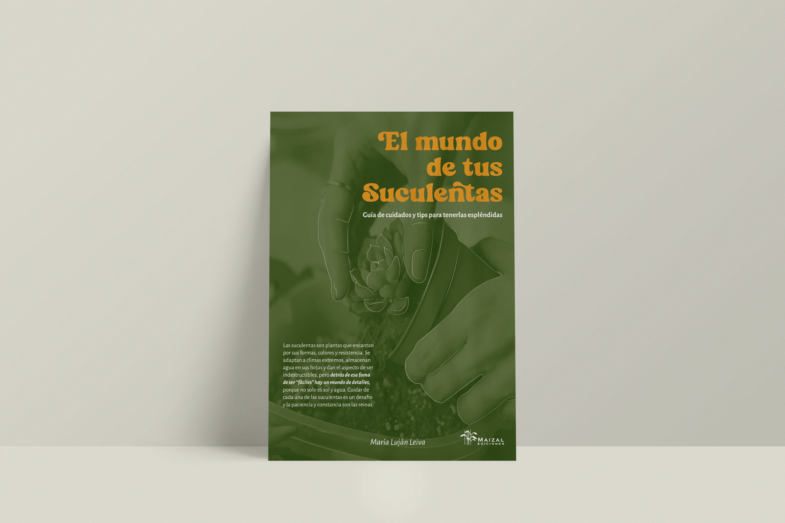
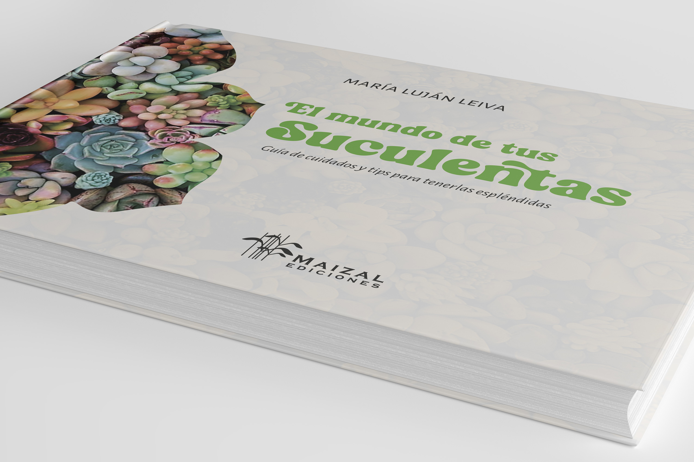
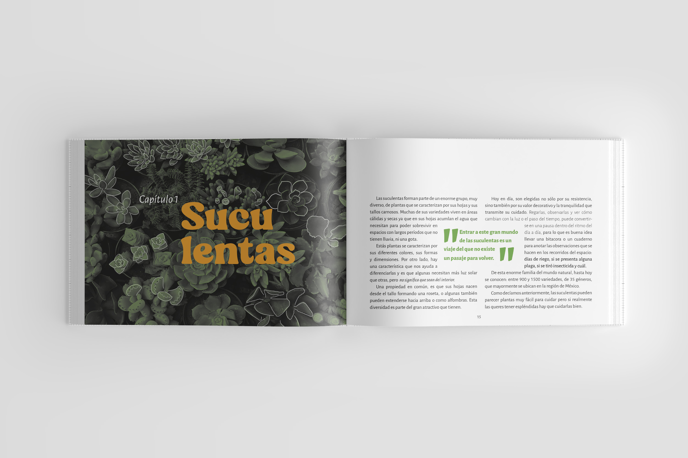
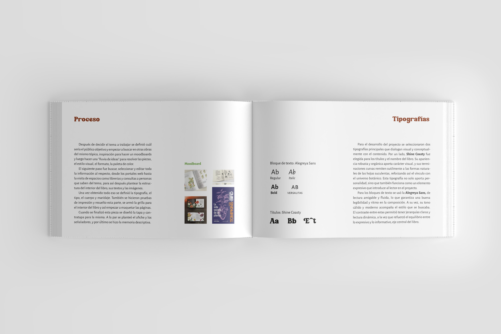
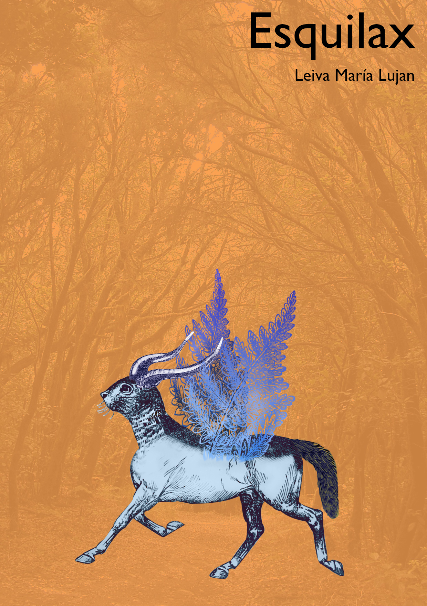

María Luján Leiva
Estudiante de Diseño y Comunicación Visual
Hola soy María Luján, tengo 32 años, actualmente soy estudiante de Diseño y Comunicación Visual en la Universidad Nacional de Lanús (arg.) y vivo con mi familia y mis mascotas. Al mismo tiempo que estudio y trabajo en un bufet escolar, en mis momentos libres me ocupo de la parte visual de las redes sociales de la parroquia a la que asisto y formo parte (La Anunciación de Luís Guillón) haciendo afiches para los eventos y publicando contenido de los grupos que forman parte de la institución.
¿Mis intereses?
Actualmente me enfoco en el diseño de afiches publicitarios, principalmente para redes sociales, pero también me interesa el mundo de la ilustración (digital, analógica y mixta).
Porfolio
Libro: El mundo de tus suculentas




Ilustración digital

Hobbies
Me gusta mucho el dibujo, la música, el deporte y, en mis ratos libres, leer libros de fantasía. También me gusta mucho salir a caminar, de paseo, ir a comer.